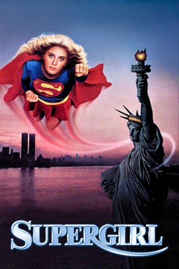

#8268 Supergirl
 
 IMDB-Wertung: 4.3 / 10
IMDB-Wertung: 4.3 / 10  Tomatometer: 10
Tomatometer: 10  Metascore: 0
Metascore: 0 
Weil ihrer Heimatstadt die zum Überleben in der sechsten Dimension notwendige Energiekugel abhanden gekommen ist, kommt Supermans Cousine Kara auf die Erde, wo sich die Kugel nun im Besitz der Hexe Selena befindet. Eigentlich auf der Erde mit übernatürlichen Kräften ausgestattet, begibt sich Supergirl Kara als Schülerin Linda Lee in ein Mädcheninternat. Schon bald gerät sie auch mit Selena aneinander, als diese den attraktiven Gärtner Ethan mit einem Zaubertrank in sich verliebt machen will und aus Versehen Kara/Linda das Objekt seiner Begierde wird.
Jahr: 1984
Dauer: 132 Minuten
FSK: 6
Land: England Studio: Scotia International FilmverleihTonspuren: DTS-HD - ,
Untertitel: , , , Englisch, Französisch, Deutsch, , , , , , ,
Auflösung: 1080p (1920x800) Größe: 12595 MB
Genre: Action, Sci-Fi, Abenteuer, Fantasy, Liebe
Regisseur: Jeannot Szwarc
Drehbuch: David Odell
Soundtrack: Jerry Goldsmith
Darsteller:
 Faye Dunaway als Selena
Faye Dunaway als Selena- Helen Slater als Kara Zor-El / Supergirl / Linda Lee
 Peter O'Toole als Zaltar
Peter O'Toole als Zaltar Hart Bochner als Ethan
Hart Bochner als Ethan Mia Farrow als Alura
Mia Farrow als Alura Brenda Vaccaro als Bianca
Brenda Vaccaro als Bianca Peter Cook als Nigel
Peter Cook als Nigel Simon Ward als Zor-El
Simon Ward als Zor-El Marc McClure als Jimmy Olsen
Marc McClure als Jimmy Olsen- Maureen Teefy als Lucy Lane
- Lynsey Beauchamp als Ali
 Matt Frewer als Eddie, Truck Driver
Matt Frewer als Eddie, Truck Driver- Kelly Hunter als Argonian Citizen
- Christian J. Fletcher als Argonian Citizen
- Kevin Scott als Argonian Citizen
- David Graham als Party Guest
- Bradley Lavelle als Lucy's Friend
- Glory Annen als Midvale Protestor
 Derek Lyons als Argonian Citizen (uncredited)
Derek Lyons als Argonian Citizen (uncredited) Tina Simmons als Argonian Citizen (uncredited)
Tina Simmons als Argonian Citizen (uncredited)- David Healy als Mr. Danvers
- Sandra Dickinson als Pretty Young Lady
- Robyn Mandell als Myra
- Jenifer Landor als Muffy
- Diana Ricardo als Mrs. Murray
- Nancy Lippold als Billy-Jo
- Sonya Leite als Betsy
- Michelle Taylor als Amy
- Nancy Wood als Nancy
- Virginia Greig als Jodie
- Julia Lewis als Gloria
- Bill McAllister als Billy, Truck Driver
- Sally Cranfield als Argonian Teacher
- Martha Parsey als Argonian Citizen
- Saskia van Basten-Batenburg als Argonian Citizen
- Richard Bidwell als Argonian Citizen
- Desiree als Argonian Citizen
- Mike Pearce als Argonian Citizen
- Karen Hale als Argonian Citizen
- James Snell als Argonian Citizen
- Beulah Hughes als Argonian Citizen
- Jane Sumner als Argonian Citizen
- Lia als Argonian Citizen
- Bailie Walsh als Argonian Citizen
- Elaine Ives-Cameron als Party Guest
- Fred Lee Own als Party Guest
- Gay Baynes als Party Guest
- Edwin Van Wyk als Party Guest
- Orla Pederson als Party Guest
- Ron Travis als Party Guest
Datei: X:\Comic-Filme\Superman\Supergirl (1984, FSK6, 1920x800).mkv seit 16.02.2018
Festplatte: Comicverfilmungen+MusikCD
 Es gibt insgesamt 10 Filme in der Gruppe 'Comic-Filme\Superman'
Es gibt insgesamt 10 Filme in der Gruppe 'Comic-Filme\Superman'